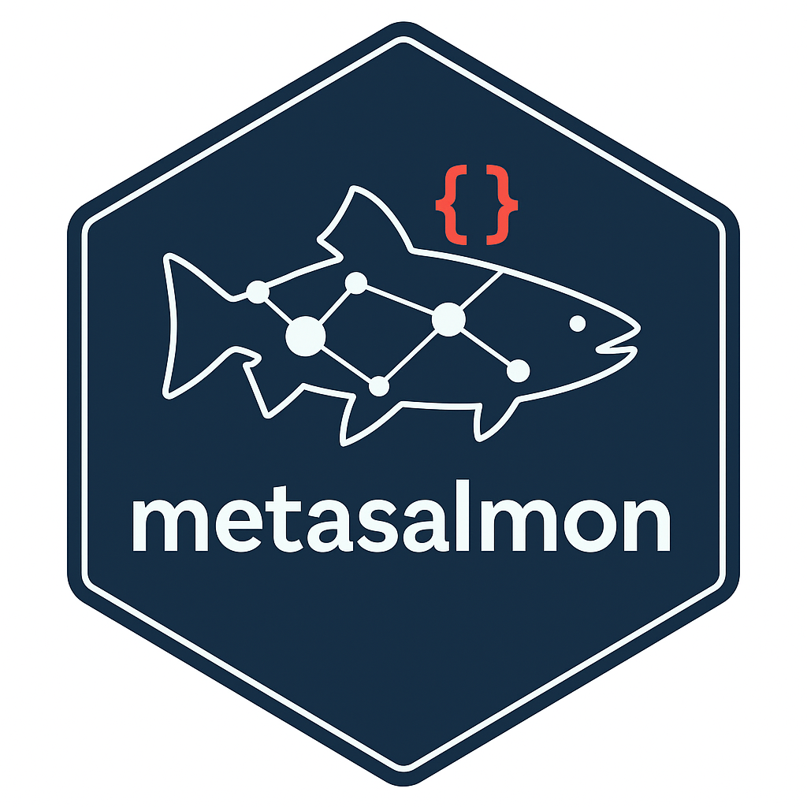

LLM Review With Context Files
llm-context-review.RmdUse this guide when you want create_sdp() or
suggest_semantics() to review semantic candidates with an
LLM and you have supporting files such as README notes,
data dictionaries, or technical reports.
What Context Files Are Supported
llm_context_files accepts local files that can add
domain context to the LLM review step:
- markdown/text notes:
.md,.txt,.rst - delimited/text data:
.csv,.tsv,.json,.yaml,.yml - source/notebook files:
.R,.Rmd,.qmd - HTML pages:
.htm,.html - Word documents:
.docx - PDF reports:
.pdfwith the optionalpdftoolspackage - Excel workbooks:
.xls,.xlsx,.xlsmwith the optionalreadxlpackage
The files are read locally, chunked, and trimmed before prompting.
They are used as supporting evidence only. The LLM still has to choose
from the deterministic shortlist returned by find_terms();
it does not mint raw IRIs.
Recommended Context Bundle
For a realistic Salmon Data Package review, pass a small bundle that mixes:
- a README, HTML export, or methods note describing the dataset,
- a CSV, workbook, or DOCX/R Markdown data dictionary or analyst note,
- a technical report or PDF summary if one exists.
For example:
context_files <- c(
"README.md",
"methods-note.Rmd",
"data-dictionary.xlsx",
"technical-report.pdf"
)One-shot create_sdp() Workflow
For DFO internal users, chapi plus the default Mistral
model is the shortest path:
library(metasalmon)
data_path <- system.file("extdata", "nuseds-fraser-coho-2023-2024.csv", package = "metasalmon")
fraser_coho <- readr::read_csv(data_path, show_col_types = FALSE)
pkg_path <- create_sdp(
fraser_coho,
path = "fraser-coho-2023-2024-sdp",
dataset_id = "fraser-coho-2023-2024",
table_id = "escapement",
llm_assess = TRUE,
llm_provider = "chapi",
llm_model = "ollama2.mistral:7b",
llm_context_files = context_files,
check_updates = FALSE,
overwrite = TRUE
)That writes a review-ready package and uses the LLM to judge deterministic candidates during semantic seeding.
What gets written back automatically:
- accepted column-level drafts into
metadata/column_dictionary.csvasREVIEW: <iri> - accepted table observation-unit drafts into
metadata/tables.csvasREVIEW: <iri>when the suggestion is still lexically compatible with the table metadata
What stays in semantic_suggestions.csv for manual
review:
- dataset-level keyword suggestions targeting
metadata/dataset.csv - code-level semantic suggestions targeting
metadata/codes.csv - any additional shortlist evidence and
llm_*review columns
Full Metadata Review With suggest_semantics()
If you want to inspect every metadata target explicitly, start from
inferred package artifacts and pass codes,
table_meta, and dataset_meta back into
suggest_semantics():
artifacts <- infer_salmon_datapackage_artifacts(
resources = list(escapement = fraser_coho),
dataset_id = "fraser-coho-2023-2024",
table_id = "escapement",
seed_semantics = FALSE
)
reviewed_dict <- suggest_semantics(
df = artifacts$resources,
dict = artifacts$dict,
codes = artifacts$codes,
table_meta = artifacts$table_meta,
dataset_meta = artifacts$dataset_meta,
llm_assess = TRUE,
llm_provider = "chapi",
llm_model = "ollama2.mistral:7b",
llm_context_files = context_files
)
suggestions <- attr(reviewed_dict, "semantic_suggestions")
assessments <- attr(reviewed_dict, "semantic_llm_assessments")Now you can filter by target file:
suggestions[, c("target_sdp_file", "target_sdp_field", "table_id", "column_name", "code_value", "label", "iri", "llm_decision", "llm_selected")]Look especially at:
target_sdp_file == "column_dictionary.csv"target_sdp_file == "codes.csv"target_sdp_file == "tables.csv"target_sdp_file == "dataset.csv"
That is the clearest path when you want the LLM to help review semantics across all package metadata tables before you finalize anything.
Review Order
After create_sdp() or
suggest_semantics():
- open
README-review.txt, - review
metadata/column_dictionary.csv, - review
metadata/tables.csv, - review
metadata/dataset.csv, - review
metadata/codes.csvwhen present, - use
semantic_suggestions.csvas the fallback evidence table.
Keep or edit every REVIEW: draft in the metadata CSVs
directly. The semantic_suggestions.csv file is evidence,
not the canonical package state.
Rebuild EDH XML After Review
Once the package metadata is finalized:
validate_salmon_datapackage(pkg_path, require_iris = TRUE)
write_edh_xml_from_sdp(pkg_path)write_edh_xml_from_sdp() is intentionally strict. It
refuses to rebuild from packages that still contain REVIEW:
markers or unresolved dataset/table placeholders. That means the
expected path is:
- create the package,
- review and finalize the metadata CSVs,
- remove all
REVIEW:prefixes, - run strict validation,
- rebuild the EDH XML.